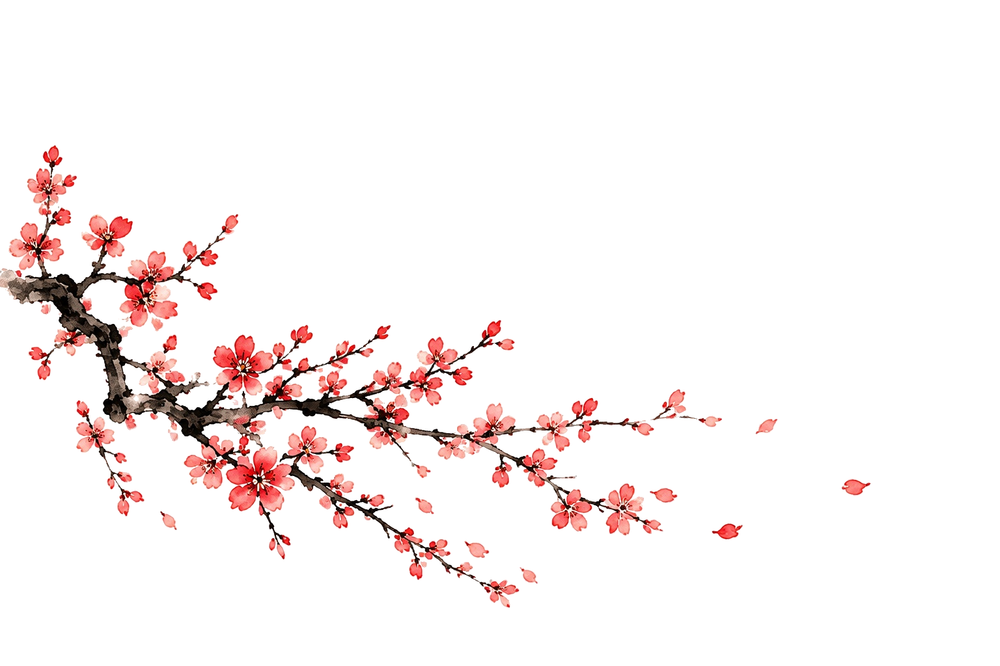
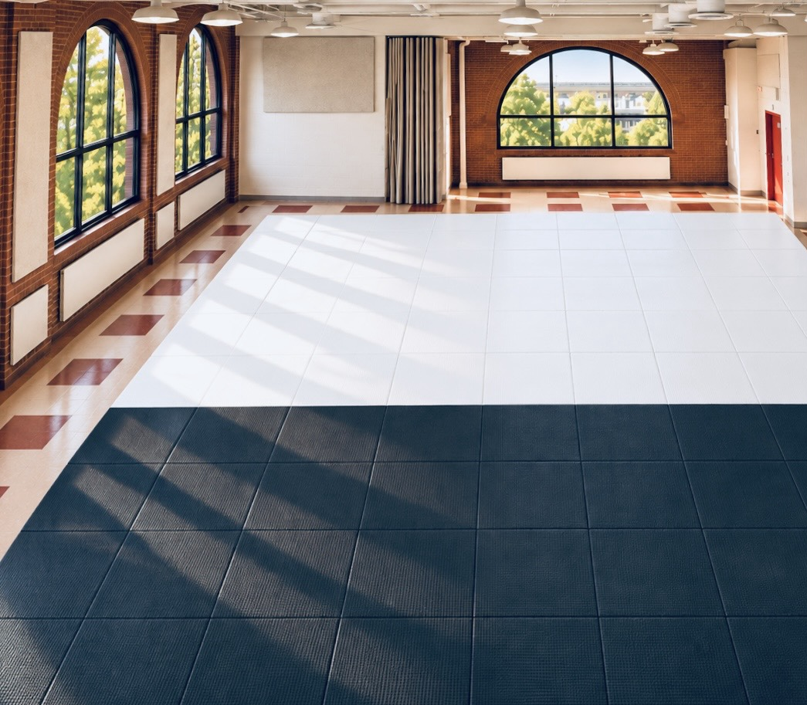

合気ウェルネス Aiki Wellness
柔軟性、可動性、バランス感覚を養い、 けがの危険を減らすための安全な転び方を学びます。
Flexibility, mobility, balance, and falling skills aimed at reducing injury.

 聖都合気武道会
SEITŌ AIKI BUDŌKAI
聖都合気武道会
SEITŌ AIKI BUDŌKAI
HOLY CITY BUDOKAI
Charleston’s Japanese Martial Arts Teachers’ Guild and Budō Society
写真・図版は構想を示す参考イメージです。 市の承認や提携を示すものではありません。 Illustrative imagery; no municipal approval or partnership is implied.
武道は、力をいかに用いるかを教えます。 合気は、争いに直面しても、 その争いに心を支配されない道を示します。
聖都合気武道会は、合気武道を創立理念とし、 生命の愛護、人格の錬成、 そして責任ある争いの解決のために武技を修めます。
日本武道の多様な伝統を尊重しながら、 すべての指導をこの共通の根本理念に基づいて行います。
市民向けに教えるすべての武道において、 合気は技術に先立つ必須の武道倫理です。 技の後に付け加える理念ではありません。
Martial arts teach us how to exercise force. Aiki teaches us how to meet conflict without becoming governed by it.
Holy City Budokai is founded upon Aiki Budō: the cultivation of martial skill for the protection of life, the development of character, and the responsible resolution of conflict.
Our society preserves the diverse martial traditions of Japan while placing their instruction under this common governing principle.
Aiki is the prerequisite budō ethic for all martial arts instruction in our proposed municipal programs—not an optional code attached after technique.
1882年、嘉納治五郎は講道館柔道を創始し、 伝統的な柔術を基礎として、 身体の鍛錬、人格の形成、 社会への貢献を目指す体系的な教育の道を開きました。
嘉納の掲げた精力善用と自他共栄は、 武道の修練を個人の成長と 社会全体の利益に結びつける理念です。
嘉納は1909年に日本人初の 国際オリンピック委員会委員となり、 日本の体育と国際スポーツの発展に貢献しました。
1930年、嘉納は植芝盛平の道場を訪れ、 その武技を見学しました。 後年の記録によれば、 嘉納は次のように述べたと伝えられています。
「これこそ私が理想していた武道、 すなわち正真正銘の柔道である。」
その後、嘉納は講道館の門弟を 植芝のもとへ送り、学ばせました。
この出会いが示すのは、 二人の優れた武道教育者に通じる理想です。 武道の最高の目的は、 単に相手を倒す力を超えたところにあります。
In 1882, Kanō Jigorō founded Kōdōkan Jūdō, transforming traditional jūjutsu into a systematic method of physical education, character development, and social responsibility.
His principles of 精力善用 (Seiryoku Zen’yō), the best use of one’s energy, and 自他共栄 (Jita Kyōei), mutual welfare and benefit, established martial training as a means of improving both the individual and society.
Kanō became Japan’s first member of the International Olympic Committee in 1909, contributing to the development of modern physical education and international sport.
In 1930, Kanō visited the dōjō of Morihei Ueshiba, whose teachings would later become known as Aikidō. According to subsequent accounts, after observing Ueshiba’s practice, Kanō declared:
“This is the budō I had envisioned as ideal— in other words, genuine jūdō.”
Kanō subsequently sent Kōdōkan students to study with Ueshiba.
This encounter illustrates a shared aspiration between two influential Japanese martial educators: the highest purpose of budō extends beyond the ability to defeat another person.
植芝盛平開祖は、真の武道を、 敵意や相手の破壊を目的とするものではなく、 愛、自己への勝利、 そして争う心の克服を通じて説きました。
「合気とは自己に打ち克ちて、 敵をして戦う心を無からしむ。」
— 植芝盛平開祖
これは、暴力に対して無力であることを 求める教えではありません。 恐れ、怒り、報復の心に判断を奪われることなく、 攻撃に向き合う力を養うことです。
目指すのは、単に相手を制することではなく、 争いの状況そのものを変え、 暴力を終わらせることにあります。
Morihei Ueshiba Ō-Sensei taught that true budō is not founded upon hostility or the destruction of an adversary. He described aiki through love, victory over oneself, and the transformation of the fighting spirit.
“Aiki means overcoming oneself and causing the adversary to lose the will to fight.” — Morihei Ueshiba Ō-Sensei
This is a demanding martial ideal. It does not require helplessness in the face of violence. Rather, it calls for the ability to meet an attack without surrendering judgment to fear, anger, or retaliation.
The objective is not simply to overcome another person, but to transform the conditions of the encounter so that violence can end.
相手の力に正面から力で対抗するのではなく、 その力を避け、立ち位置を変え、 異なる角度から応じることを学びます。 間合い、時機、体捌きを通じて、 正面からの衝突では見えなかった可能性を見いだします。
こうした身体の稽古は、心のあり方にも通じます。 激しくなる対立から一歩身を引き、 異なる視点から状況を見つめ、 相手を力で圧倒することに頼らない 解決の道を探る力を養います。
合気の理念は、稽古の前に言葉で 説くだけのものではありません。 日々の動きと相手との関わりを通じて、 身につけていくものです。
Rather than meeting force directly with opposing force, we learn to step aside, change our position, and respond from a different angle. Through distance, timing, and movement, we discover possibilities that direct confrontation would conceal.
This physical practice cultivates a corresponding habit of mind: the ability to step outside an escalating conflict, consider another perspective, and find a resolution that does not depend upon overpowering another person.
The principles of aiki are not merely discussed before training. They are cultivated through the movements and relationships of practice itself.
聖都合気武道会は、打撃、投げ、組討、抑えなど、 受け継がれてきた武道の技法と特色を尊重します。
打撃は打撃として、投げは投げとして、 その技術的な実効性を損なうことなく稽古します。
異なるのは、その力を何のために用いるかという 根本の目的です。
不要な争いを避け、圧力のもとでも冷静さを保ち、 守るべきときには的確に行動し、 敵意を長引かせることなく争いを収める力を養います。
実際の抵抗や一定の競い合いを伴う稽古も、 技量、判断力、相互の責任を育むために行います。 他者に勝つこと自体を稽古の目的とはしません。
私たちは、技を教えた後に倫理を 付け加えるのではありません。 まず武道の目的を明らかにし、 すべての技をその目的に従って修めます。
Holy City Budokai preserves the technical integrity of the martial traditions within its heritage, including striking, throwing, grappling, and restraint.
A strike remains a strike. A throw remains a throw. Their effectiveness is neither denied nor diminished.
What changes is the purpose governing their application.
Students learn to recognize and avoid unnecessary conflict, maintain composure under pressure, respond effectively when protection is required, and bring an encounter to an end without perpetuating hostility.
Training may include genuine resistance and structured challenges. Such practice serves the development of skill, judgment, and mutual responsibility—not the pursuit of victory at another’s expense.
We do not teach martial techniques and subsequently attach an ethical code. We begin with the purpose of budō and cultivate every martial skill in service of that purpose.
チャールストン市に対し、 私たちは単なる護身技術の指導を超えた 武道教育を提案します。
合気ウェルネス、合気道、青少年の護身教育、 伝統的な武道礼法を通じて、 身体への自信、状況を見極める力、 自己を治める力、相互尊重、 責任ある行動を育みます。
各講座は対象や方法を異にしながらも、 一つの根本理念を共有します。
武道教育の最高の成果は、 単に争いに勝つ力ではなく、 生命を守り、争いを終わらせる力にあります。
For the City of Charleston, this philosophy offers a foundation for martial education that extends beyond conventional self-defense instruction.
Through Aiki Wellness, Aikidō, youth self-protection, and traditional budō etiquette, we propose to cultivate physical confidence, awareness, self-command, mutual respect, and responsible action.
These programs differ in method and audience, but share one governing principle:
The highest achievement of martial education is not simply the ability to prevail in conflict, but the ability to protect life and bring conflict to an end.
Historical quotations are attributed to later accounts. Their precise Japanese wording and source editions should be checked before formal publication.
柔軟性、可動性、バランス感覚を養い、 けがの危険を減らすための安全な転び方を学びます。
Flexibility, mobility, balance, and falling skills aimed at reducing injury.
初心者から経験者まで、 合気の倫理を基礎とし、 相手への配慮と節度を大切にする合気道の稽古。
Aikidō for beginners and experienced students, grounded in aiki, restraint, and mutual safety.
子どもの自信、護身、自制心を育み、 攻撃性に頼らずいじめに対応する力を学びます。
Youth confidence, self-defense, and responses to bullying without cultivating aggression.
立つ、座る、歩く、礼をする。 礼節と無駄のない所作を、 日常生活にも生かす学び。
Courtesy, posture, movement, and responsible conduct grounded in traditional warrior etiquette.
この礼法の道は、約850年の歴史を持ち、 歴代の将軍家に礼法と弓の教えを伝えた 武家の伝統につながるものです。
聖都流門人会は、師と門人の個人的な 師弟関係を通じて学ぶ道を構想しています。 礼法を入口に、内省を重んじる弓の稽古、 さらに弓馬術へと進む展望です。
The etiquette pathway looks toward a living tradition more than 850 years old, whose teachers historically instructed generations of Japan’s shoguns.
Through the Seitō-ryū Monjinkai, we propose a personal teacher–disciple relationship as the basis for study. From reihō (etiquette), this path leads toward contemplative archery and kyūbajutsu (mounted archery).
一つの施設の中に、市民に開かれた講座と、 聖都合気武道会門人の専門的な稽古の場を 並行して設ける構想です。
One facility, two complementary training spaces: open municipal classes alongside private Budōkai study.

市民が参加できる合気ウェルネス、 合気道、子どもの護身、武道礼法の講座。 参加のために門人会への入会を必要としません。
Publicly accessible classes in Aiki Wellness, Aikidō, youth self-defense, and Budō Etiquette. Budōkai membership is not required.
門人のための専門的な稽古、上級講座、 指導者の育成。見習い指導者は、 その学びを生かして市民向け講座を補助します。
Dedicated member study, advanced classes, and teacher apprenticeship. Developing instructors bring that experience into supervised municipal programs.
並行利用の時間割、区域の分離、 利用条件および安全対策は、 市と協議のうえ決定します。
Simultaneous use, boundaries, scheduling, and safety arrangements would be agreed with the City.
協議のための提案 Proposed Arrangement
市の施設を利用できることへの対価として、 市が上級講座の受講に充てられる 奨学クレジットを市民に提供できる 仕組みを提案します。
また、指導者見習いが監督のもとで 市民向け講座の運営・指導補助に参加します。
In exchange for municipal facility use, the City would receive scholarship credits to award toward advanced classes.
Apprentice teachers would assist with staffing and supervised instruction in municipal programs.
日本の武道指導者や伝統流派との 学びと交流の機会を育み、 チャールストンの市民に 生きた文化への接点を開くことを目指します。
We seek to develop educational and cultural exchange with Japanese teachers and living martial traditions, creating opportunities for Charleston residents to encounter these disciplines directly.